evidence/raw/RUN-TOOLCHECK-01/TC-TODO-001/TC-TODO-001__case__element__20261029T095511-879.png生成时间：2026-10-29T18:29:36+08:00
运行 ID：RUN-TOOLCHECK-01
目标：https://demo.playwright.dev/todomvc
状态：通过
验证 https://demo.playwright.dev/todomvc 的核心交互、输入边界、状态过滤与失败取证链路。仅陈述本机实际执行且可追溯的结果。
| 项目 | 值 |
|---|---|
| python | 3.13.9 |
| platform | Windows-11-10.0.26340-SP0 |
| pytest | pytest |
| target | https://demo.playwright.dev/todomvc |
| 用例 ID | 标题 | 状态 | 证据数 | 日志 |
|---|---|---|---|---|
| TC-TODO-001 | 新增一条待办 | 通过 | 3 | evidence/logs/RUN-TOOLCHECK-01/TC-TODO-001.log |
| TC-TOOL-BROWSER-001 | Playwright CLI 全链路工具自检 | 通过 | 10 | evidence/logs/RUN-TOOLCHECK-01/TC-TOOL-BROWSER-001.log |
| TC-TOOL-EVIDENCE-001 | 证据管理器 CLI 自检 | 通过 | 1 | evidence/logs/RUN-TOOLCHECK-01/evidence-add-defect.log |
| TC-TOOL-IMAGE-001 | 图像 inspect/差异/裁剪/标注工具自检 | 通过 | 18 | evidence/logs/RUN-TOOLCHECK-01/TC-TOOL-IMAGE-001.log |
| TC-TOOL-MCP-001 | Playwright MCP 扩展工具自检 | 通过 | 3 | evidence/logs/RUN-TOOLCHECK-01/TC-TOOL-MCP-001.log |
| TC-TOOL-OPENCODE-001 | OpenCode 当前会话工具自检 | 通过 | 1 | evidence/logs/RUN-TOOLCHECK-01/TC-TOOL-OPENCODE-001.log |
状态：通过
预期：True
实际：断言通过
日志：evidence/logs/RUN-TOOLCHECK-01/TC-TODO-001.log
| # | 断言 | 预期 | 实际 | 结果 |
|---|---|---|---|---|
| 1 | 待办列表包含新增项 | ['Buy milk'] | ['Buy milk'] | 通过 |
| 2 | 剩余计数为 1 | 1 item left | 1 item left | 通过 |
| 3 | 底部状态栏可见 | True | True | 通过 |
evidence/raw/RUN-TOOLCHECK-01/TC-TODO-001/TC-TODO-001__case__element__20261029T095511-879.png
evidence/raw/RUN-TOOLCHECK-01/TC-TODO-001/TC-TODO-001__case__fullpage__20261029T095511-974.png
evidence/raw/RUN-TOOLCHECK-01/TC-TODO-001/TC-TODO-001__final__viewport__20261029T095512-047.png状态：通过
预期：打开 TodoMVC；快照、输入、勾选、悬停、求值、缩放、视口/整页/元素截图、控制台/网络、状态保存、标签页切换均成功。
实际：全部成功；items=1 checked=1 count='0 items left'；截图 1280x720/1024x768/550x59 均可读取。
日志：evidence/logs/RUN-TOOLCHECK-01/TC-TOOL-BROWSER-001.log

evidence/raw/RUN-TOOLCHECK-01/browser/before-viewport.png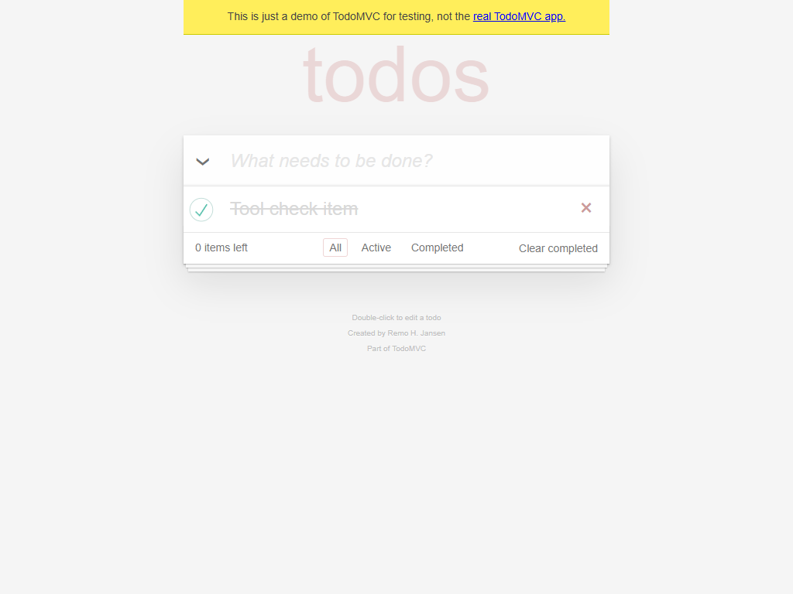
evidence/raw/RUN-TOOLCHECK-01/browser/after-viewport.png
evidence/raw/RUN-TOOLCHECK-01/browser/after-fullpage.pngevidence/raw/RUN-TOOLCHECK-01/browser/after-element.png状态：通过
预期：start-run/update-case/add-defect/summary/register/verify/index 均可执行；临时虚拟缺陷在验证后清理。
实际：add-defect 在临时运行中生成 1 条虚拟缺陷并统计为 defect_count=1；随后删除临时运行；正式运行未登记产品缺陷。
日志：evidence/logs/RUN-TOOLCHECK-01/evidence-add-defect.log
状态：通过
预期：inspect 读取尺寸；相同图差异为 0；受控差异返回区域；裁剪和中文标注成功；原始图不变。
实际：相同图 0 像素/no-change；前后图 7981/921600（0.866%）、6 区域、PSNR 31.0085；裁剪 550x48、标注图生成。
日志：evidence/logs/RUN-TOOLCHECK-01/TC-TOOL-IMAGE-001.log
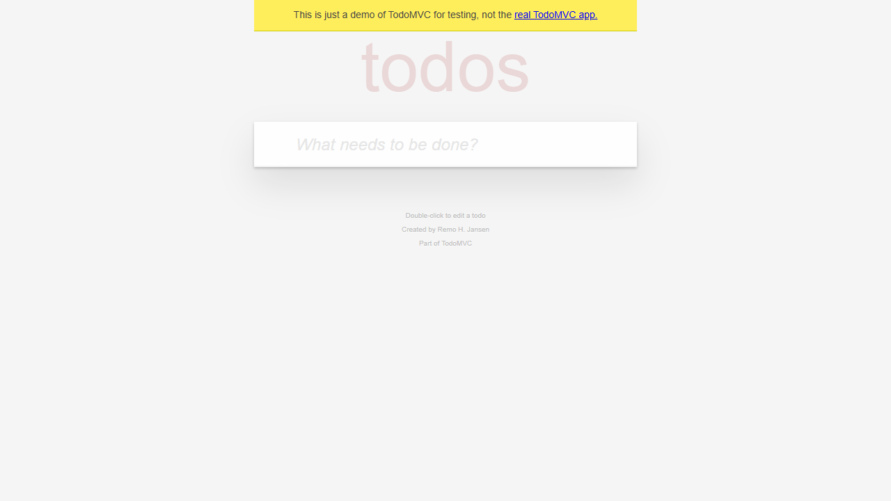
evidence/raw/RUN-TOOLCHECK-01/browser/diff-before.png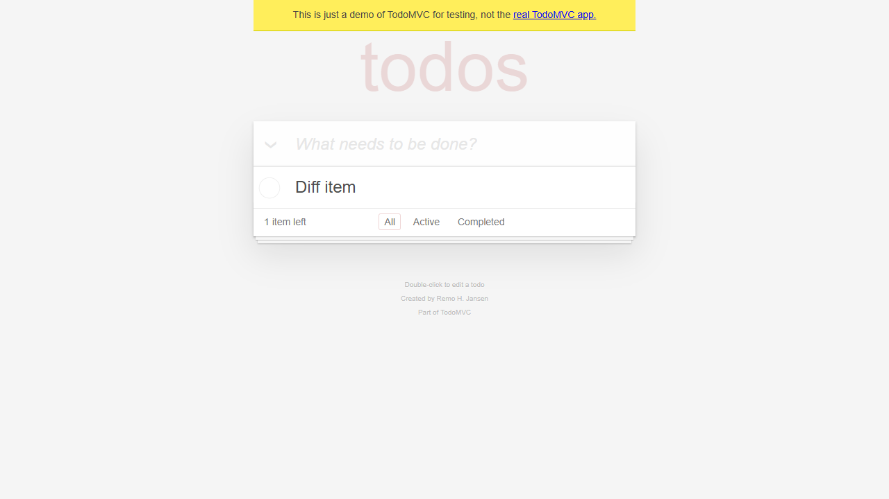
evidence/raw/RUN-TOOLCHECK-01/browser/diff-after.png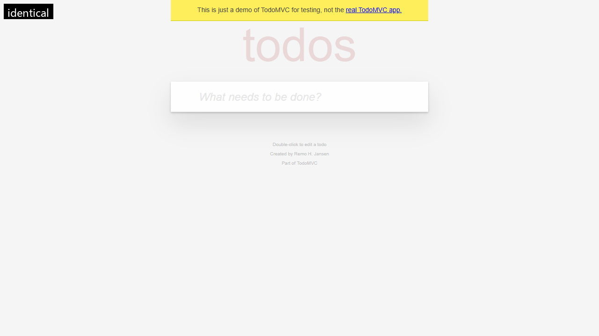
evidence/diff/RUN-TOOLCHECK-01/identical/annotated.png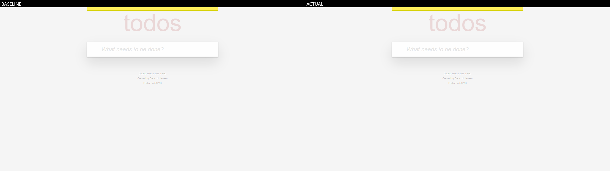
evidence/diff/RUN-TOOLCHECK-01/identical/comparison.png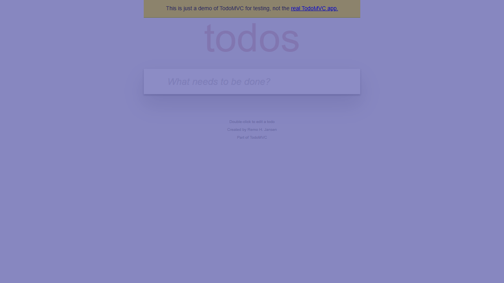
evidence/diff/RUN-TOOLCHECK-01/identical/heatmap.pngevidence/diff/RUN-TOOLCHECK-01/identical/diff.png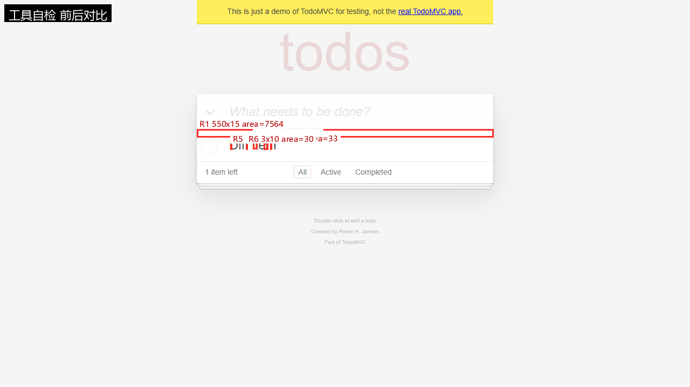
evidence/diff/RUN-TOOLCHECK-01/changed/annotated.png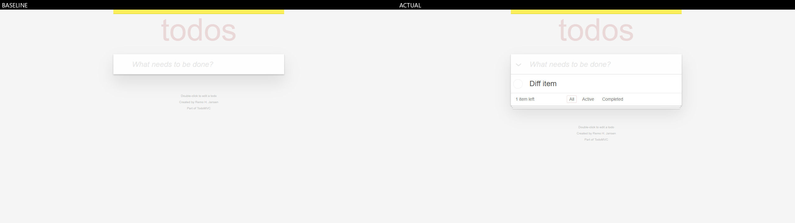
evidence/diff/RUN-TOOLCHECK-01/changed/comparison.png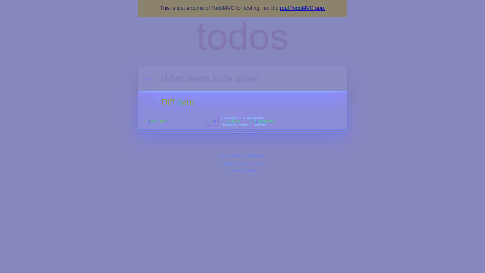
evidence/diff/RUN-TOOLCHECK-01/changed/heatmap.png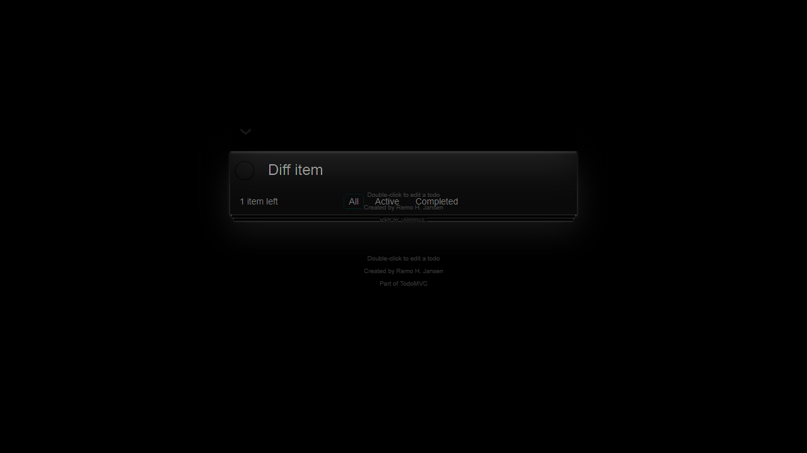
evidence/diff/RUN-TOOLCHECK-01/changed/diff.pngevidence/annotated/RUN-TOOLCHECK-01/image/new-item-crop.png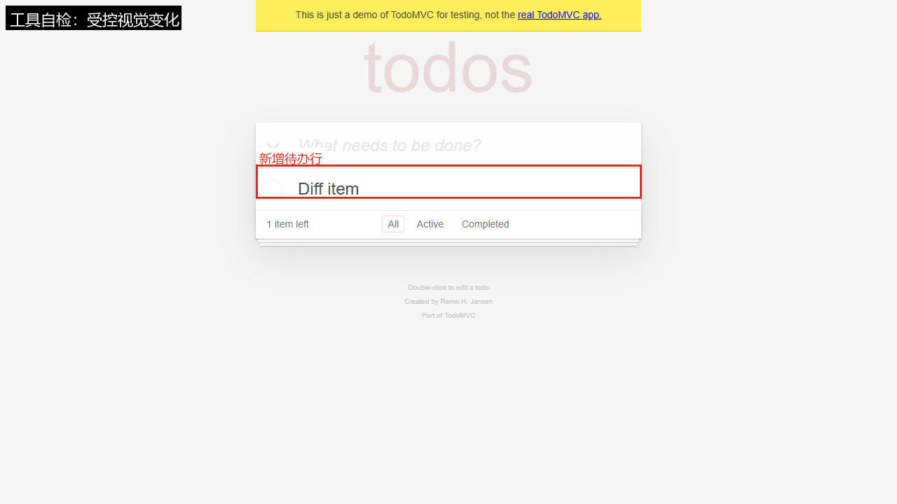
evidence/annotated/RUN-TOOLCHECK-01/image/new-item-annotated.png状态：通过
预期：MCP 服务可初始化；navigate/type/wait/find/snapshot/click/evaluate/resize/console/network/tabs/screenshot/close 全部成功。
实际：25 个工具；14 个调用步骤全部成功；evaluate 返回 items=1 checked=1 count='0 items left'；截图 1024x768 有效。
日志：evidence/logs/RUN-TOOLCHECK-01/TC-TOOL-MCP-001.log
evidence/raw/RUN-TOOLCHECK-01/mcp/mcp-fullpage.png状态：通过
预期：skill/task/glob/grep/webfetch/read image 可用；命令文件可枚举；图片可读取。
实际：skill visual-testing 加载成功；task explore 返回 6 skills/5 commands；glob 找到命令文件；grep 找到 READY 标记；webfetch 返回 Example Domain；read image 成功显示截图。
日志：evidence/logs/RUN-TOOLCHECK-01/TC-TOOL-OPENCODE-001.log
未登记产品缺陷。若有 xfailed 用例，它只用于验证失败取证链路，不等同于产品缺陷。
基准：evidence\raw\RUN-TOOLCHECK-01\browser\diff-before.png
实际：evidence\raw\RUN-TOOLCHECK-01\browser\diff-after.png
判定：visual-change-detected（受控变化，待人工复核，不构成缺陷结论）
差异像素：7981 / 921600（0.00866）
区域数：6；PSNR：31.0085
指标：evidence/diff/RUN-TOOLCHECK-01/changed/metrics.json
| 区域 | x | y | w | h | 面积 |
|---|---|---|---|---|---|
| R1 | 365 | 240 | 550 | 15 | 7564 |
| R2 | 469 | 262 | 8 | 15 | 60 |
| R3 | 489 | 266 | 8 | 12 | 56 |
| R4 | 501 | 267 | 3 | 11 | 33 |
| R5 | 427 | 268 | 3 | 10 | 30 |
| R6 | 456 | 268 | 3 | 10 | 30 |
基准：evidence\raw\RUN-TOOLCHECK-01\browser\diff-before.png
实际：evidence\raw\RUN-TOOLCHECK-01\browser\diff-before.png
判定：no-change（受控变化，待人工复核，不构成缺陷结论）
差异像素：0 / 921600（0.0）
区域数：0；PSNR：None
指标：evidence/diff/RUN-TOOLCHECK-01/identical/metrics.json
已登记 36，校验通过 36；缺失 0；哈希不一致 0。
JUnit：
控制台：
tests=1 failures=0 errors=0 xfailed=0
本轮功能用例全部通过；本轮无受控预期失败用例。
像素差异不等同于产品缺陷；未执行场景不会标记为通过；比赛前需确认 AI 工具合规要求。